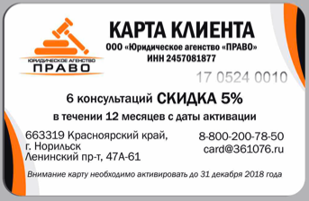
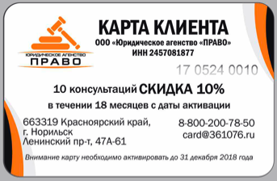

Договор публичной оферты ООО "Юридическое агентство "ПРАВО"
Карта клиента - в зависимости от номинала, предоставляет предъявителю скидку на юридические услуги в размере указанном на карте бессрочно, а так же предоставляет возможность получить бесплатные консультации в количестве и на условиях указанных на карте. Консультации можно получить как по телефону, электронной почте, так и при личной явке в офис компании.
Карта активируется при первичном получении услуги, либо автоматически в срок указанный на карте. Например, если на карте указано, что ее необходимо активировать до 31 декабря 2018 года, то карта автоматически активируется 31.12.2018 года, если до этой даты клиент ею ни разу не пользовался.
Бесплатные консультации доступны в количестве и на срок, указанный на карте с момента активации. При этом, если владелец карты в период действия бесплатных консультаций ими не воспользовался, у него в любом случае сохраняется право на одну бесплатную консультацию в любое время за пределами срока их действия. Размер скидки на услуги указанный на карте предоставляется бессрочно при придъявлении карты.
Карта клиента не является именной и может передаваться третьим лицам. При утрате карта не восстанавливается. Карта не подлежит возврату, оплаченные за карту денежные средства не возвращаются.
Консультации по карте проводятся в рабочее время ООО "Юридическое агентство "ПРАВО", в том числе по телефону. Круглосуточно получить консультацию возможно по электронной почте, адрес которой указан на карте. В экстренных случаях, получить консультацию по телефону возможно и вне рабочее время, при этом списание количества бесплатных консультаций производится в двойном размере.
Для получение консультации необходимо позвонить по многоканальному телефону 8 (3919) 36-10-76, выбрать раздел "Карта клиента". При общении с юристом будьте готовы сообщить номер карты указанный на лицевой стороне. Резервный телефон для получения услуги 8-905-979-10-76.
| Номинал карты | Цена |
|---|---|
|  | 3500 |
|  | 5000 |
Какие приимущества так же доступны владельцам карты клиента?
1. Возможность приема клиента в офисе компании в нерабочее время по предварительной записи.
2. Возможность выезда специалиста к клиенту в экстренных случаях на территории г.Норильска.
3. Возможность оплачивать услуги компании в рассрочку.
4. Возможность пользоваться картой всей семьей, вне зависимости от места проживания.
Так же, по карте клиента, дополнительную скидку вы можете получить у наших Партнеров, перечень которых периодически дополняется внизу страницы. Условия и размер скидки устанавливаются Партнерами самостоятельно.
НАШИ ПАРТНЕРЫ